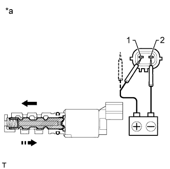

CAMSHAFT OIL CONTROL VALVE > INSPECTION |
| 1. INSPECT CAMSHAFT TIMING OIL CONTROL VALVE ASSEMBLY |
Measure the resistance according to the value(s) in the table below.
| Tester Connection | Condition | Specified Condition |
| 1 - 2 | 20°C (68°F) | 6.9 to 7.9 Ω |
|  |
Connect the positive (+) lead of the battery to terminal 1 and the negative (-) lead to terminal 2 and check the movement of the valve.
| Condition | Specified Condition |
| Battery positive (+) voltage is applied | Valve moves in left arrow direction shown in the illustration |
| Battery positive (+) voltage is cut off | Valve moves in right arrow direction shown in the illustration |
| *a | Component without harness connected (Camshaft Timing Oil Control Valve) |